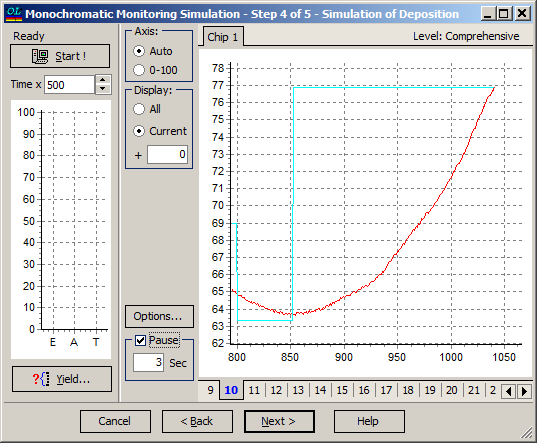
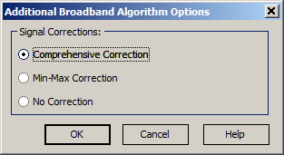

Monochromatic Monitoring Simulation - Simulation of Deposition
Monochromatic Monitoring Simulation - Simulation of Deposition
Navigation: OptiLayer Menu Commands > Analysis Menu > Monochromatic Monitoring Simulation >
Monochromatic Monitoring Simulation - Simulation of Deposition
` <single_wavelength_signal_errors.html>`__ ` <monochromatic_monitoring.html>`__ ` <single_wavelength_result.html>`__

At the fourth step of the dialog, press the Start button to run the computational manufacturing experiment. During computations, this button is designated as the Terminate button and allows interrupting computations.
In the course of the computational manufacturing experiment, successive online single-wavelength data are analyzed by the incorporated control algorithm to determine termination times for layer depositions. To select a type of algorithm, click the Options… button to invoke the selection dialog.

The Comprehensive Correction algorithm implements a monitoring strategy aimed at suppressing the cumulative effect in the previously deposited coating layers. Please refer to our paper for more details: A. V. Tikhonravov and M. K. Trubetskov, “Elimination of cumulative effect of thickness errors in monochromatic monitoring of optical coating production: theory,” Appl. Opt. 46, 2084-2090 (2007) http://www.opticsinfobase.org/abstract.cfm?URI=ao-46-11-2084
The Min-Max Correction algorithm uses a simple approach to correct the termination level according to measured extrema during layer deposition.
The No Correction algorithm is the simplest one, determining the termination moment according to reaching the predefined termination levels. This is a completely passive strategy.
The running heading above the Start button indicates which layer is currently being deposited. Two bars below the Start button indicate the theoretical layer thickness (green bar) and the growing thickness of the deposited layer (red bar).
The measured (i.e., simulated) signal is represented with a red curve in the right pane. Aqua lines help track extrema values predicted by the monitoring run-sheet and termination levels obtained from the monitoring run-sheet or obtained with the correction algorithm (as mentioned above).
The Pause checkbox regulates whether there are time intervals between depositions of layers or not.
You can view all layers in the design simultaneously or only the current layer. Use the Axis and Display groups of controls to achieve a more suitable presentation in the right pane of the window.
See also: